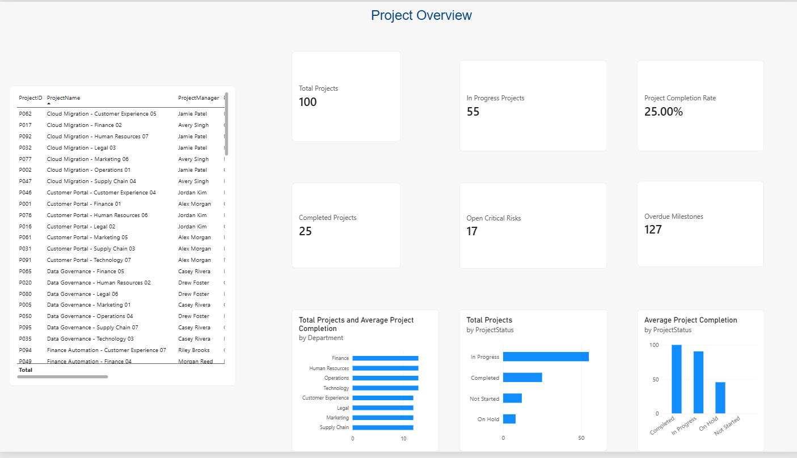
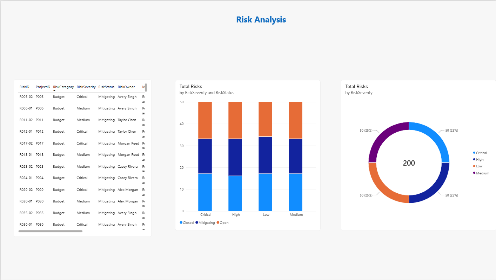
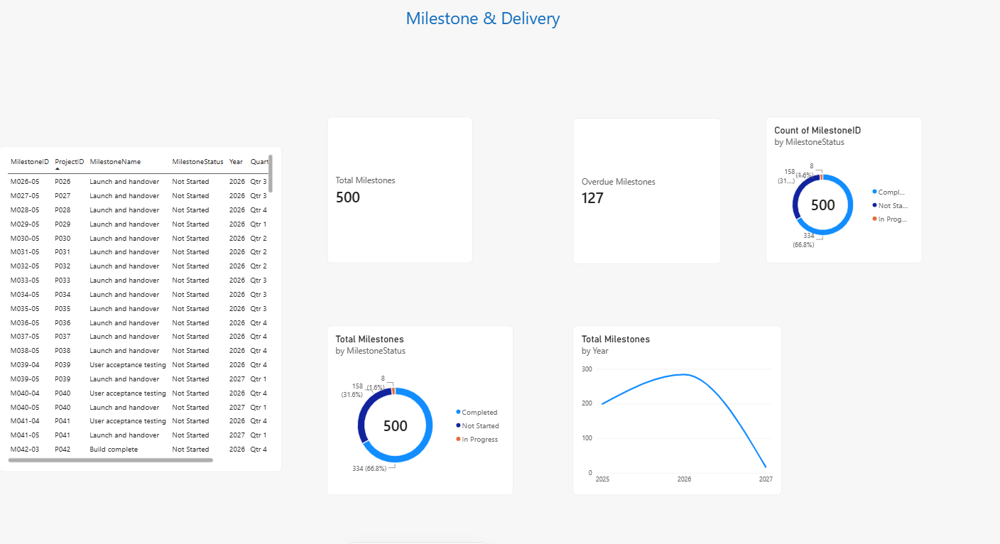
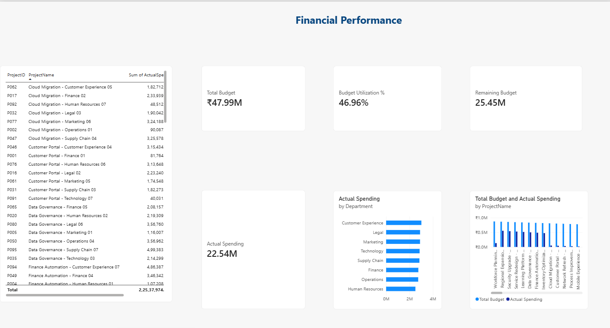

Business & Operations
Operational reporting, KPI monitoring, process understanding, performance analysis and business documentation.
Hello, I'm
A Computer Science & Business Systems graduate interested in business operations, management, project coordination and business analysis. I enjoy understanding how work gets done, tracking performance and using structured analysis to support better decisions.
01 — ABOUT
I’m a graduate in Computer Science & Business Systems, with an interest in roles that sit at the intersection of business operations, analysis and technology.
My project work has focused on understanding operational performance and monitoring project portfolios. Through these projects, I have worked with structured datasets, SQL analysis, Python scripts, Power BI reporting and project tracking concepts.
I’m looking to begin my career in a role where I can support teams, understand business processes, monitor outcomes and contribute to well-informed decisions.
02 — CAPABILITIES
A combination of business understanding, analytical tools and coordination skills.
Operational reporting, KPI monitoring, process understanding, performance analysis and business documentation.
Milestone tracking, project status reporting, risk monitoring, task coordination and portfolio visibility.
Exploring business questions, analyzing information, identifying patterns and communicating findings.
Working with datasets and building structured analysis to make performance easier to understand.
03 — SELECTED WORK
Practical work demonstrating analysis, monitoring and decision-support skills.
Understanding business performance through operational and financial indicators.
Analyzes order and order-item data to explore revenue, product costs, shipping costs, profitability, delivery performance, cancellations and returns. The project combines SQL analysis, Python validation and a Power BI dashboard to make key operational measures easier to monitor.




Four dashboard views · Select an image to view it larger
A consolidated view of projects, milestones and risks.
Built around a project portfolio dataset, this project organizes project information and supports monitoring of milestones, delivery status, risks and financial performance. SQL Server analysis and a four-page Power BI report provide portfolio-level views for review and decision support.
04 — CAREER INTERESTS
Primarily entry-level, associate, trainee and coordinator opportunities.
Business Operations Associate · Operations Associate · Process Associate · Management Trainee · Operations Analyst
Junior Business Analyst · Associate Business Analyst · Business Process Analyst · Business Research Associate
Project Coordinator · Project Management Associate · Project Support Associate · PMO Associate · Program Coordinator
Product Operations Associate · Product Coordinator · Product Analyst · Reporting Analyst · BI Associate
Finance Operations Associate · Risk Associate · Vendor Operations Associate · Procurement Associate · Supply Chain Associate
Role interests reflect areas I’m targeting for entry-level opportunities; they are not claims of prior professional experience in each function.
05 — TOOLKIT
My technical foundation supports the business and analytical work shown in my projects.
06 — CONTACT
I'm interested in connecting with teams hiring for entry-level business operations, project coordination, business analysis and related roles.